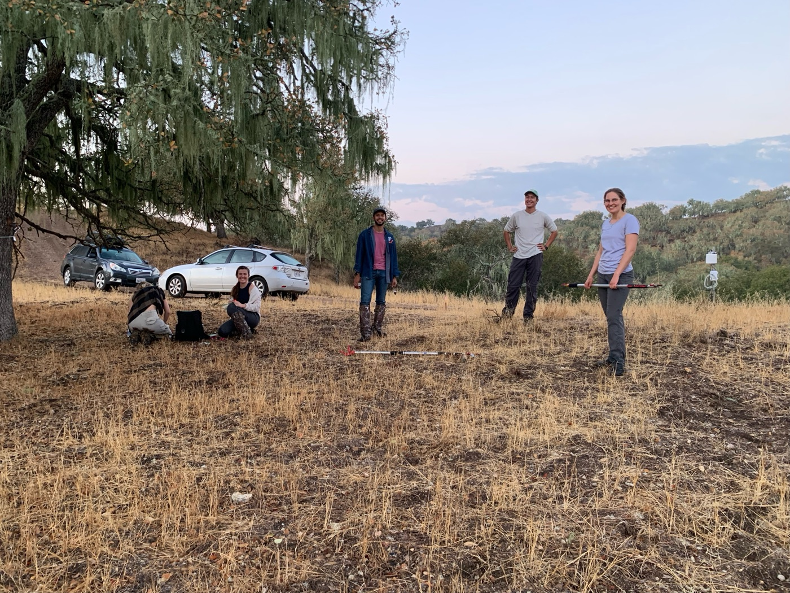

Remote sensing drought stress and fire risk
Abstract
Remote sensing holds promise for ecosystem-level monitoring of plant drought stress but is limited by uncertain linkages between physiological stress and remotely sensed metrics of water content. Here, we investigate the stability of relationships between water potential (Ψ) and water content (measured in situ and via repeat airborne VSWIR imaging) over diel, seasonal, and spatial variation in two xeric oak tree species. We also compare these field-based relationships with ones established in laboratory settings that might be used as calibration. Due to confounding physiological processes related to growth, both in situ and remotely sensed metrics lacked consistent relationships with stress when measured across space or through time. Relationships between water content and physiological drought stress measured over the growing season were stronger and more closely related to established laboratory-based drydown methods than those measured across space (i.e., between wet trees and dry trees). These results provide insight into the utility of "space for time" approaches in remote sensing and demonstrate both important limitations and the potential power of high temporal resolution remote sensing for detecting drought stress.
